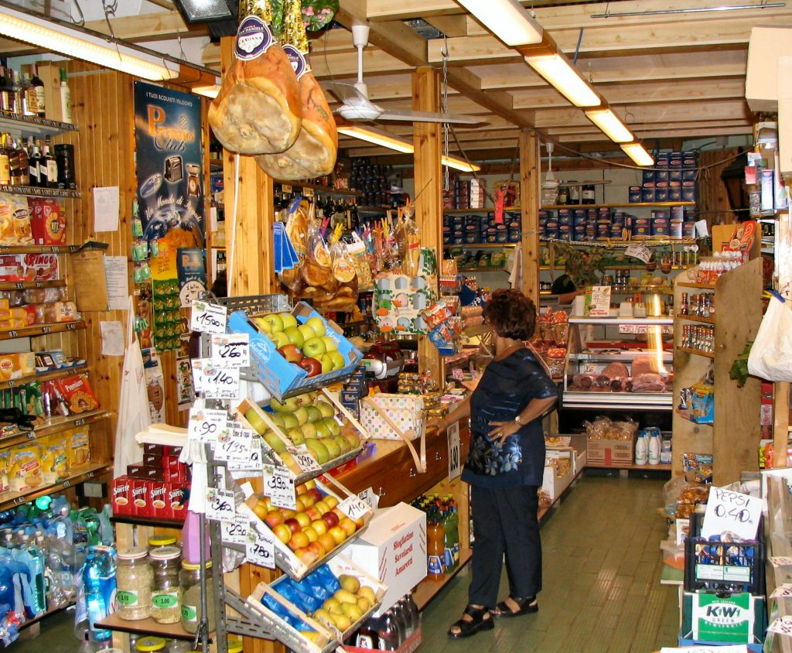

Photo by Paolo Tosolini
If dining at restaurants seems too expensive or if you wish to spend more of your time doing other things, then head for a grocery store (alimentari) or supermarket. This way you’ll get everything you need for a quick and simple picnic or a meal on the go, with more time to experience exciting Italian works of art and culture. In Italy alimentari and supermercati are members of the same family. The only difference lies in the size and scope: alimentari are all-purpose food stores, they are mini supermarkets and are usually family owned; whereas supermarkets are much bigger and sell food (cibo), drinks, drug products, and other general items. Alimentari is a great choice when you need a fast, simple and delicious meal. They have a section of regular merchandise goods and a deli section where they sell cheese (formaggio), bread (pane), cold cuts, and other fresh products. At the deli counter, they serve one client at a time. Sometimes you need to get a number (numero) and in other cases, you simply need to remember who is before and after you. Alimentari are a great way to get closer to the Italian culture and tradition. Usually, the people behind the counter are very friendly and great talkers! ***DID YOU KNOW? Many of these grocery stores make sandwiches on demand: just pick the type of bread and filling you prefer and they will make it for you. It's an inexpensive way of having a great meal and tasting Italian food at the same time. You just might be pleasantly surprised at how delicious and satisfying eating this way in Italy can be. *** {This is an excerpt from chapter 5 “Stores” of the eBook “Italy from the Inside. A native Italian reveals the secrets of traveling in Italy”. To buy our eBook click here}